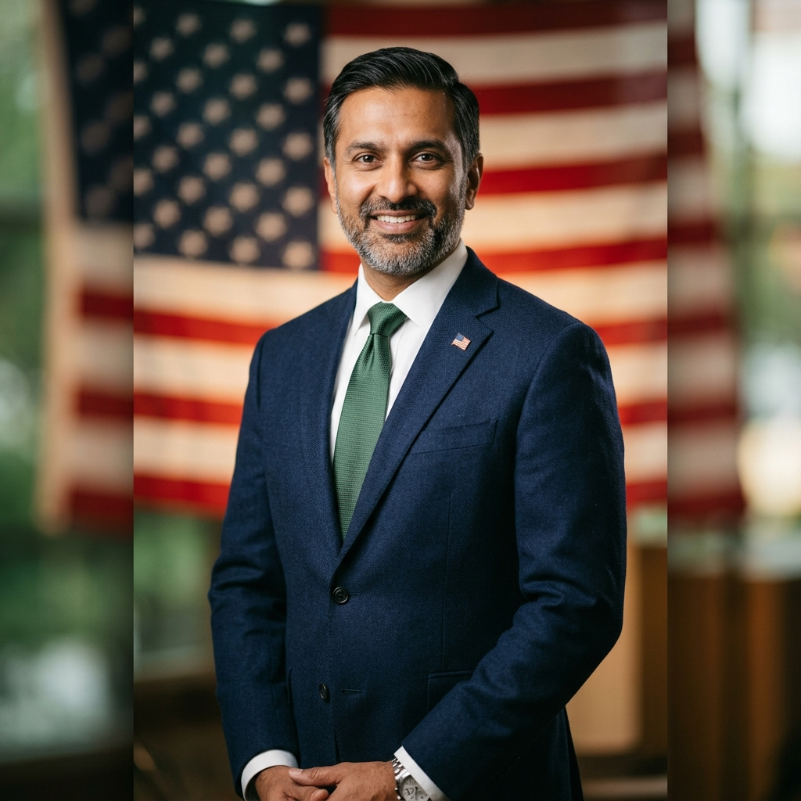

Not Words, But Actions Matter
Candidate for FOMAA Vice President
Support a transparent leadership for the Federation of Malayalee Associations of Americas · Term 2026–2028

The 25-Year Impact
For over two and a half decades, Samuel Mathai has translated conviction into tangible impact — funding education, building homes, and empowering communities in Kerala and across America.
Providing school supplies and critical education assistance to underprivileged students across Kerala for 25+ years.
Personally financed the construction of homes for two underprivileged families, transforming their lives forever.
Forged leadership roots through campus politics at Kerala University, building a foundation for community service.
Proven Track Record
Decades of enterprise execution and community-rooted business leadership across multiple industries.
18+ Years
Over 18 years of compassionate care through a healthcare agency dedicated to improving lives and supporting medical professionals across communities.
15+ Years
15+ years serving the community through a gas station business, demonstrating consistent commitment to neighborhood service and entrepreneurial resilience.
Active Portfolio
Strategic management of commercial property investments, building long-term asset value and contributing to local economic development and growth.
Raised funds through 'Vaishakasandhya' cultural event to build a Cancer Ward at the Regional Cancer Center, Kerala.
Meet the Candidate
Samuel's FOMAA journey spans over 14 years — from attending his first convention to serving at the national level, always leading with integrity and purpose.
Since 2010
Consistent presence and active participation in FOMAA national conventions for over a decade.
Committee Leadership
Led the Language & Education Committee, championing Malayalam language preservation and academic excellence programs.
2018 – 2020
Served as President of the DMA, strengthening member engagement and organizational governance at the regional level.
2020 – 2022
Appointed to the FOMAA National Committee, contributing to policy direction and strategic initiatives at the highest organizational tier.
Why I Am Running
A strategic, actionable platform built on five pillars of community empowerment, cultural preservation, and generational impact.
01
🎓
Launching structured programs to prepare the next generation for political and civic leadership, equipping young Malayalee Americans with the tools to lead nationally.
02
📚
Creating robust scholarship funds and career mentorship pipelines that connect students with professionals and open doors to high-impact career opportunities.
03
🤝
Establishing comprehensive senior care initiatives including health clinics, wellness programs, and community support networks for our elders.
04
💎
Founding a Malayalee American Chamber of Commerce with dedicated women empowerment initiatives, fostering entrepreneurship and economic independence.
05
🏏
Launching the NCL USA Cricket League with legendary players like Sachin Tendulkar and Brian Lara, plus a movie production initiative to elevate Malayalee cultural presence globally.
Trust & Credibility
Samuel's work has earned the trust and recognition of distinguished leaders across politics, governance, and community service.
"
Inauguration & Support
Member of Parliament, Author & Former UN Under-Secretary-General
Political Endorsement"
Inauguration & Support
Senior IAS Officer, Government of Kerala — Distinguished Administrative Leader
Governance Endorsement"
Inauguration & Support
Leader of Opposition, Kerala Legislative Assembly
Legislative Endorsement"
Community Recognition
Historic cultural fundraiser — Raised critical funds for the Cancer Ward at Regional Cancer Center, Kerala
Community ImpactStay Updated
Be the first to receive campaign updates, event invitations, and ways to support transparent leadership.